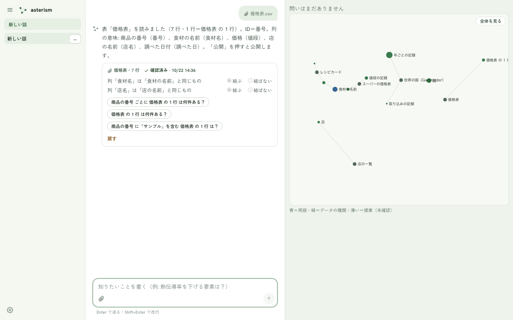

データセットの管理 — 公開・見直し・削除
データセットの一覧や詳細の画面はありません。公開済みのデータは図の星として並び、公開と見直しはチャットで行います。公開までの流れそのものは getting-started.md を参照してください。
公開する
クリップで添えた表の返事にある「公開」を押すと、このサーバを使う人が質問したときに、このデータが出典つきで引用されるようになります（それまでは誰にも見えません）。公開したデータは、図に星として灯ります。未公開の表は、図に薄い星座として出ます。


公開のあと、名前が既存の用語と完全に一致した関係があれば、機械の手番として同じ話に出ます。「確認」で確定します。
見直す
設計を見直したいときは、次のどちらかです。
- クリップで同じ表を添える — 直したい表をもう一度添えます。読み直され、返事の列の意味・ID・結びつきを見直して、「公開」で公開し直します
- データの削除 — 取り込んだ表が合わないときは、その返事の「戻す」を押します。取り込んだ未公開のデータが消えます（消せなかったときは注記が出ます）。話を消したときも、その話で取り込んだ未公開のデータは消えます
直したい内容は、チャットに書いて伝えます（例: 「ID を DOI にする」）。ID の候補が複数あるときは、返事の中の選択肢から選んで「決める」を押します。
AI が未設定のときは、クリップで開くかんたんモードの「ためす」から、「⑤ かたちをたしかめる に戻る」ボタンや「この意味を保存して戻る」ボタンで戻って直せます（はじめる）。
設計を見直す v0.9.0 (2026-07-23) で追加
見直しで何を直したかによって、そのあとの動きが変わります。
- 項目の意味・単位だけを直したとき v0.51.0 (2026-10-07) で追加 — データを作り直さずに書き換わります
- 種類の分け方・つながり・ID を変えたとき — 同じデータセットのまま新しい版として作り直され、公開すると切り替わります
公開したあとに ID の作り方（データの数えかた）を変えると、前の ID には新しい ID への引っ越し先が記録され、すでに配った引用から新しい内容にたどれますv0.22.2 (2026-08-27) で追加。
ただし、引き継げない ID が出ることがあります。前の ID を作るのに使っていた列がいまのファイルに無いとき、前に作っていた種類が新しい設計に無いとき、取り込みの途中で引っ越し先を記録できなかったときです。公開の前には「ID の引っ越し」の欄が出て、引っ越し先が記録された ID が何件あるかと、引き継げないぶんがあるときは、どのファイルのぶんが、なぜ引き継げないかを確かめられます。この欄は、かんたんモードの「公開する」ステップに出ます。
引き継げないぶんがあっても、そのまま公開できます。前の ID を残したいときは、公開の前に ID の作り方を元に戻してください。かんたんモードでは「ためすに戻る」ボタン →「⑤ かたちをたしかめる に戻る」ボタンで戻れます。元に戻して取り込み直すと、「ID の引っ越し」の欄は出なくなります。
気になる点 v0.11.0 (2026-07-24) で追加
つながっていないデータ・使われていない列・数値が文字として記録されている列などの指摘は、返事の中の注記として出ます。直し方も 1 行で添えられます（例: 「ID を DOI にする」と書く）。
公開済みのデータの削除
公開済みのデータを削除する専用のボタンは、この画面にはありません。公開をやめたり削除したりする操作は、サーバの API で行います。データと ID は残る形で公開をやめられるので、すでに引用されたリンクは壊れません。
関連
- 公開までの流れは getting-started.md
- データセットどうしのつながりは crosswalk.md